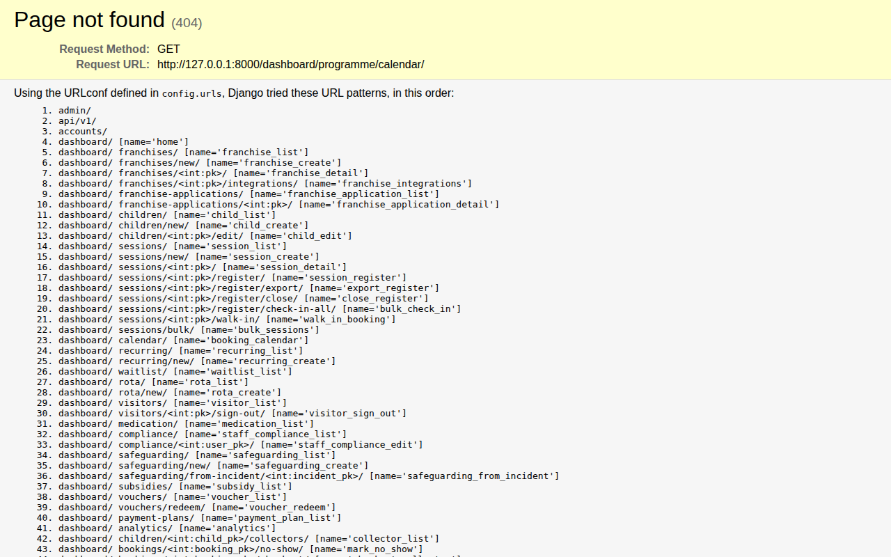
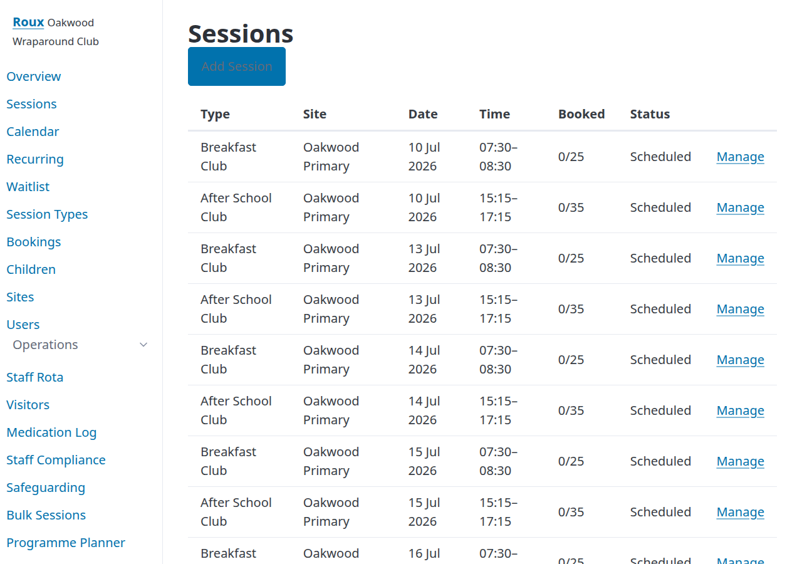
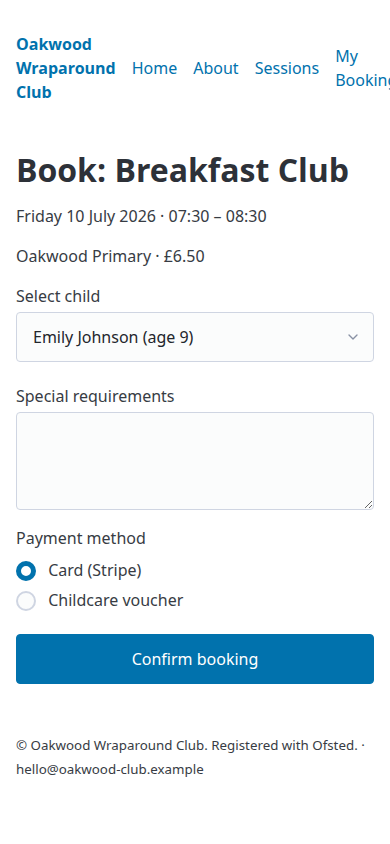
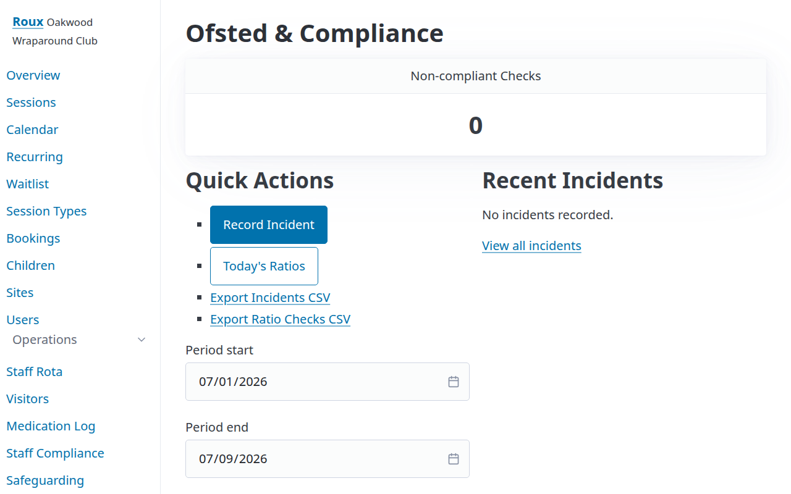
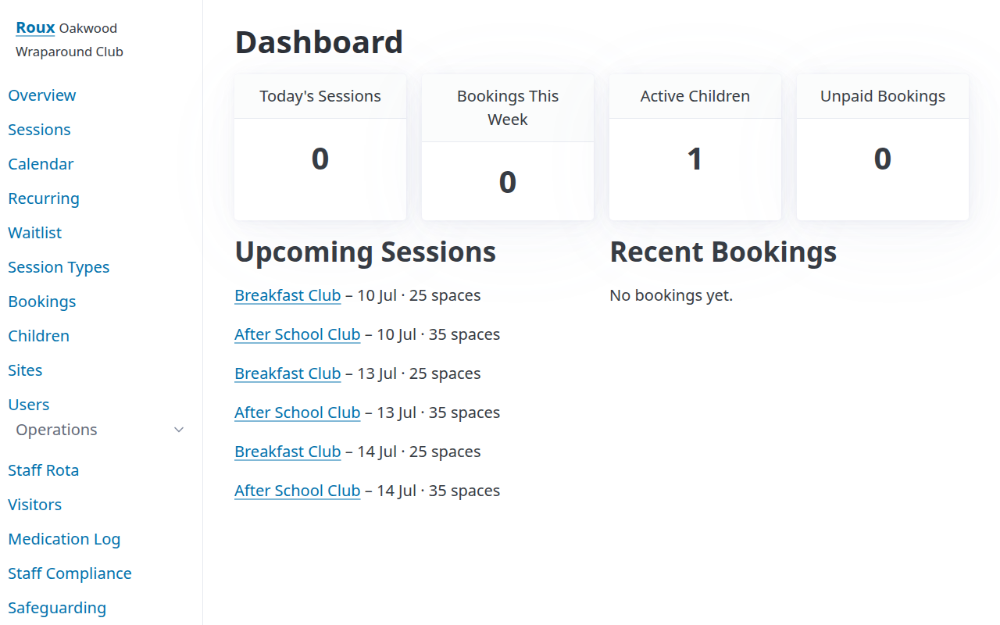
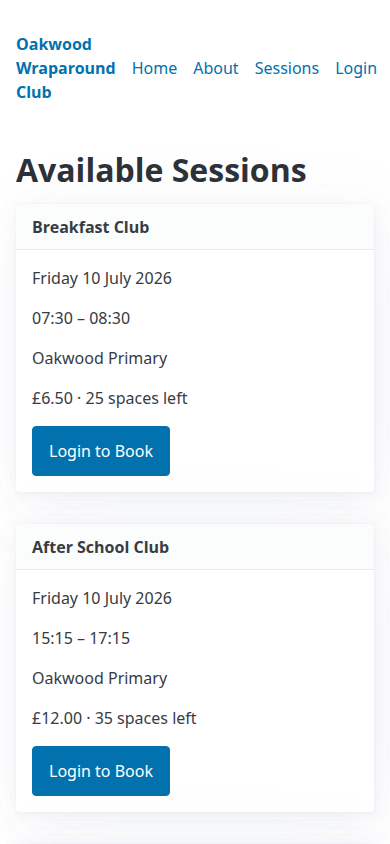
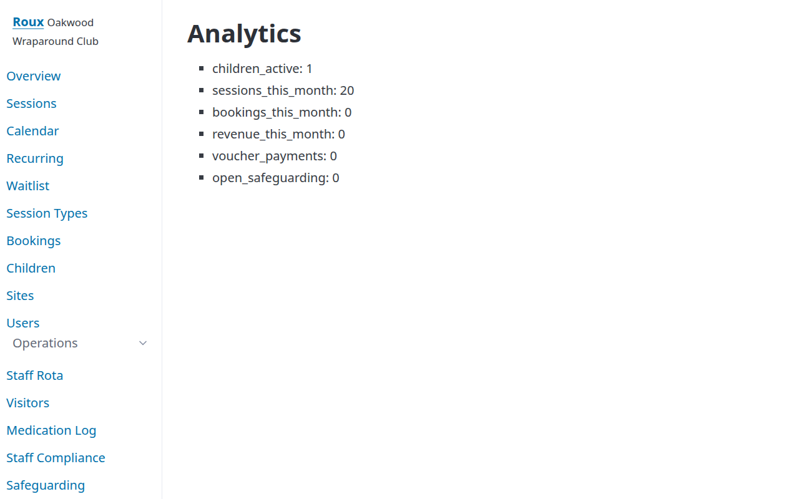

Operations dashboard
Sessions, bookings, check-in/out, multi-site management, and role-based access for your whole team.
UK wraparound care platform
Roux helps breakfast clubs, after-school clubs, and holiday programmes manage bookings, parent payments, Ofsted compliance, and beautiful websites — with the warmth parents expect and the control staff need.
Everything you need to run safe, organised wraparound care — without the clutter of legacy childcare software.
Sessions, bookings, check-in/out, multi-site management, and role-based access for your whole team.
Drag-and-drop pages with visual editors. Parents book and pay from your branded, welcoming site.
Session payments via Stripe Checkout with automatic invoice sync to Xero for painless accounting.
Incident logging, UK EYFS staff:child ratio checks, monthly reports, and CSV exports.
JWT-authenticated REST API for iOS and Android apps — children, sessions, and bookings covered.
Automatic emails for bookings, payments, check-in, and check-out — plus staff session reminders.
Roux connects families, staff on the floor, schools, and operators in one platform — from the breakfast club door to franchise-scale growth.
Programme planner
Build activity catalogues, reusable week packs, and term programmes with automatic Week A/B alternation. Closures, trips, and day overrides flow straight to the session register and parent booking pages.

Live operations
Run the session from a live register with allergy flags, programme blocks, walk-in bookings, authorised collector checkout, and one-click escalation to safeguarding cases when concerns arise.

Parent experience
Branded CMS websites, mobile-friendly booking, Stripe Checkout, childcare voucher redemption, absence reporting, and automatic notifications — with a JWT REST API ready for native parent apps and push alerts.

Compliance
UK EYFS ratio checks, incident logging with safeguarding flags, staff DBS tracking, medication records, and inspection-ready CSV exports — built for professional childcare, not retrofitted spreadsheets.

Give parents the relationship they expect — not just a booking form.
JWT REST API for iOS and Android — children, sessions, bookings, and programme blocks covered today.
Check-in and check-out alerts, payment confirmations, waitlist offers, and session changes delivered instantly.
Parents see when their child is on site, checked in, and collected — real-time peace of mind.
SEND needs, dietary requirements, consent forms, medication notes, and authorised collectors in one place.
Club-to-parent threads tied to a child or session — no more lost emails in busy inboxes.
Swap sessions, manage recurring patterns, and update profiles without calling the office.
Tools built for the playground, the door, and the staff room — not just the back office.

Today's sessions, live attendance, unpaid bookings, and contact messages on one dashboard — then straight into the register, rota, or safeguarding workflow.
Wraparound care sits between school and home. Roux connects both.
Auto-import pupil lists, classes, FSM flags, and pupil premium eligibility from your MIS.
Inset days, early finishes, and term dates drive programme closures automatically.
Multi-academy trust views across sites with consolidated reporting and provisioning.
Eligible families invited to breakfast club and after-school places from school data.
Wraparound isn't just card payments — it's vouchers, subsidies, payment plans, and local authority contracts. Roux handles the full picture.

Records are the start. Decisions are the goal.
Track children, sessions, bookings, voucher payments, and open safeguarding cases. Forecast fill rates, spot churn, and benchmark across your franchise network.

Predict session fill rates and right-size staffing before the week starts.
See which activities and time slots parents want — optimise your programme.
Staff cost vs income per club, per site, per activity block.
Anonymised KPIs across partner tenants — learn what works network-wide.
More than childcare — memorable experiences with safety built in.
Sport, creative, quiet, outdoor, and food blocks — reusable across week packs and terms.
Consent forms, medical packs, transport lists, and headcounts for off-site days.
Same slot, different support levels — inclusive programming by design.
Food blocks cross-checked against child allergy data on the register.
Coach bookings, invoicing, and DBS checks for third-party activity leaders.
Track what each child has tried this term — badges, variety, and outcomes.
Roux is open-source software for operators who want to launch and run their own wraparound care franchise — not a franchise we sell. Deploy the platform, provision isolated tenants, and grow your network under your brand with your own Stripe and Xero accounts.
Statutory staff:child ratios, Ofsted-notifiable incident tracking, emergency contacts, allergy and medical notes — Roux reflects the realities of professional childcare.
Modern, extensible stack: Django · HTMX · Alpine.js · Playwright · SST on AWS
Clone the repo, seed demo data, and explore the dashboard and parent booking flow locally.
git clone https://github.com/kurtisrogers/Roux.git
cd Roux
pip install -r requirements.txt -r requirements-dev.txt
python manage.py migrate && python manage.py seed_demo
python manage.py runserver
Demo logins:
admin / admin123 ·
superadmin / super123 ·
parent1 / parent123